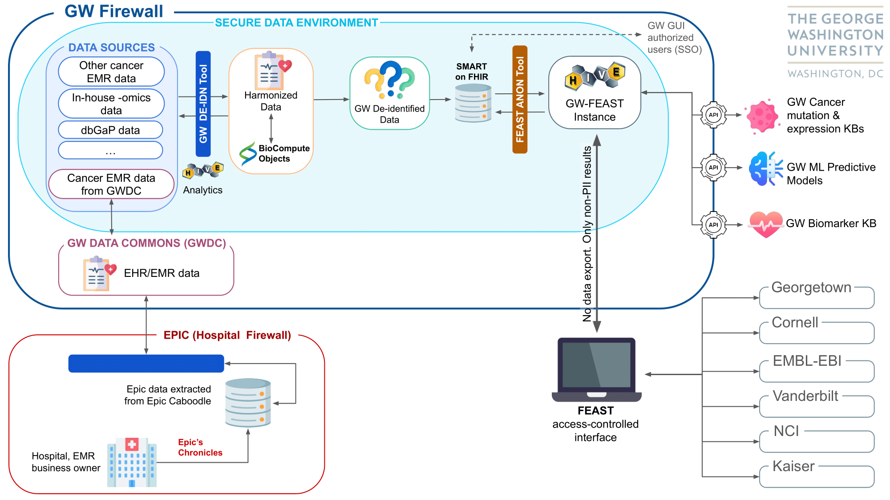

GW-FEAST Project
The GW Federated Ecosystems for Analytics and Standardized Technologies (GW-FEAST) project is part of the
ARPA-H FEAST performer team initiative that includes academic and industry partners. The goal of the ARPA-H
performer teams is “to create bridges across data silos to make health data more accessible and usable”.
ARPA-H FEAST offers two major innovations for digital healthcare ecosystems addressing current challenges.
- Agnostic federation across multiple data sources allows DNA HIVE to move computations to data instead of
moving data to computation; this avoids violation of regulations for data export while using all data.
- Agnostic harmonization through self-standardizing protocols enables computers to handshake and find
appropriate standard transformations as per need without prior need for expensive standardization
efforts at sites.
FAQs & Documentation
hhttps://hivelab.biochemistry.gwu.edu/wiki/index.php?title=FEAST-ARPA-H
Collaborators
- Vahan Simonyan PhD, Chief Scientist DNAHIVE
- Raja Mazumder, PhD, Professor George Washington University
- Art Sedrakyan, MD, PhD, Professor Weill Cornell
- Maria Martin, PhD, Team Lead EBI
- Peter McGarvey, PhD, Professor Georgetown University
- Jonas Almeida, PhD, Senior investigator NCI/DCEG
- Michael Matheny, PhD, Professor Vanderbilt University
- Elizabeth Paxton, MD, Senior Director Data Analytics Kaiser Permanente
GW-FEAST Team Members & Collaborators
- Raja Mazumder, PhD, Professor George Washington University
- Anelia Horvath, PhD, Professor George Washington University
- Jonathon Keeney, PhD, Asst. Professor George Washington University
- Robel Kahsay, PhD, Professor George Washington University
- Patrick McNeely, PhD, Professor George Washington University
- Lori Krammer, MPH, Research Associate, George Washington University
- Jorge Sepulveda, MD, PhD, Professor George Washington University
Useful Links
https://arpa-h.gov/
https://arpa-h.gov/research-and-funding/programs/arpa-h-bdf-toolbox